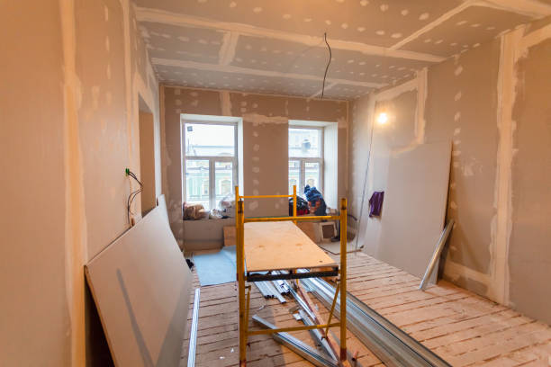
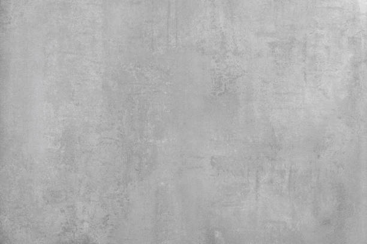
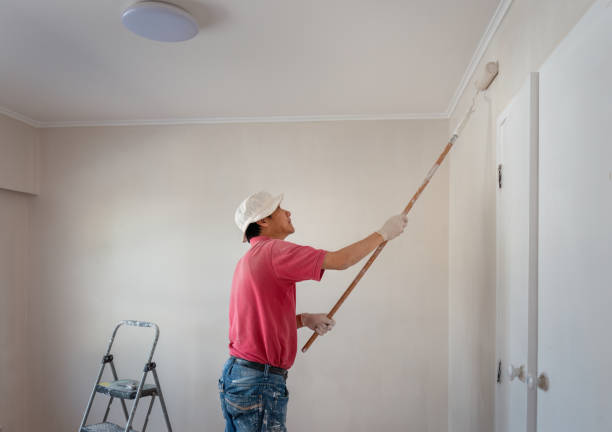
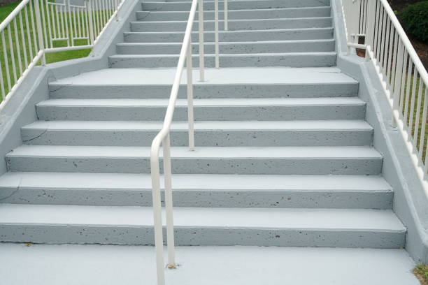

La Riviera California
info@hudsonconcretecontractors.xyz
La Riviera California
info@hudsonconcretecontractors.xyz

Professional concrete services in La Riviera California delivering exceptional craftsmanship for residential and commercial needs. Quality materials and expert installation for driveways, patios, and more. Your satisfaction guaranteed.
Click Here To Call Us (877) 848-1711When it comes to durable and aesthetically pleasing concrete solutions in La Riviera California our company stands out as the leading provider. With years of experience in the concrete industry, we specialize in delivering high-quality concrete installations, repairs, and maintenance services that meet the specific needs of both residential and commercial clients.
Our team of skilled professionals is committed to using the finest materials and the latest techniques to ensure your concrete projects are completed on time and within budget. Whether you need a new driveway, patio, sidewalk, or foundation, we guarantee a seamless process from start to finish. We pride ourselves on our ability to handle projects of all sizes with the utmost precision and care.
At Concrete, we understand the importance of investing in long-lasting and reliable concrete structures. That’s why we use only top-grade materials that are engineered to withstand the test of time, even in the harshest weather conditions in La Riviera California . Our dedication to excellence and customer satisfaction has earned us a reputation as the go-to concrete company in the region.
If you’re searching for trusted concrete contractors in La Riviera California look no further. Contact us today for a free consultation and discover why we’re the best choice for all your concrete needs in La Riviera California .
Residential & commercial Concrete
Quality services at affordable prices
Immediate 24/ 7 emergency services


Cracks in concrete surfaces are a common concern for homeowners in La Riviera California and understanding their causes is essential for effective prevention and repair. At Hudson Concrete Contractors, we are dedicated to helping you maintain your concrete surfaces in optimal condition.
Shrinkage During Curing
One of the primary causes of cracks is shrinkage during the curing process. As concrete sets and dries, it naturally contracts. If the curing process is too rapid or not properly managed, it can lead to surface cracks. Ensuring adequate curing time and methods can help mitigate this issue.
Temperature Fluctuations
Concrete is sensitive to temperature changes. Extreme heat or cold can cause the concrete to expand or contract, leading to cracks. Proper control of temperature during both the mixing and curing stages is crucial to prevent these types of issues.
Poor Mixing or Application
Improper mixing of concrete or incorrect application can result in a weak surface prone to cracking. Using the right mix ratios and ensuring proper application techniques are vital for a durable and crack-resistant surface.
Settlement and Soil Movement
Concrete surfaces can also crack due to settling or shifting of the underlying soil. If the ground beneath the concrete is unstable or poorly compacted, it can cause uneven settling, leading to cracks in the surface. Addressing soil issues before pouring concrete is essential for long-term stability.
Overloading and Structural Issues
Excessive weight or structural stress can cause concrete to crack. Ensuring that the concrete is designed and reinforced to handle the expected load is important to prevent such problems.
Preventive Measures and Repair
To prevent cracks, use proper construction techniques, maintain adequate curing conditions, and ensure proper site preparation. If cracks do appear, timely repair is essential to prevent further damage. At Hudson Concrete Contractors, we offer expert services to address and repair concrete cracks, ensuring the longevity and durability of your surfaces.
For reliable solutions to concrete issues in La Riviera California contact Hudson Concrete Contractors today. We’re here to provide expert advice and quality service to keep your concrete surfaces in top shape.
Residential & commercial Concrete
Quality services at affordable prices
Immediate 24/ 7 emergency services
Finding trustworthy cement contractors near you can be challenging. Our team of certified cement contractors brings expertise and reliability right to your doorstep. We specialize in various cement applications, ensuring your projects are completed on time and within budget. With a focus on customer service and quality, we are committed to providing solutions that meet your specific needs while maintaining the highest standards of craftsmanship.

Budget constraints shouldn’t prevent you from getting quality concrete services. Our affordable concrete services provide you with high-quality solutions without breaking the bank. We offer a range of services tailored to fit your budget, whether you need a new driveway, patio, or concrete resurfacing. By choosing us, you ensure that you're getting the best value for your investment, with no compromise on quality or service.

Protecting your concrete surfaces is essential for longevity and maintenance. Our concrete sealing services in La Riviera California provide an effective barrier against moisture, stains, and environmental factors that can deteriorate your concrete. We use high-quality sealers designed to extend the life of your concrete surfaces while enhancing their appearance. Our experienced team ensures that every application is performed with precision and care, providing you with a protective solution that stands the test of time. Trust us to keep your concrete looking and performing its best with our specialized sealing services.
Uneven concrete surfaces can pose safety risks and create aesthetic issues. Our concrete leveling services are the ideal solution for addressing sunken or displaced concrete slabs, including driveways, patios, and sidewalks. We utilize advanced techniques such as mudjacking and poly-jacking to raise and stabilize your concrete, restoring its level and function. Our expert team focuses on delivering quick and effective results, ensuring minimal disruption to your daily routine. Choose our concrete leveling services for a safer, more visually appealing solution to your uneven surfaces.

The foundation is the most crucial element of your structure, and its installation must be executed flawlessly. Our concrete foundation installation services are designed to provide you with a solid base for your home or commercial building. We pay close attention to the design, soil conditions, and building codes to ensure that each foundation is laid correctly and effectively. Our skilled contractors work diligently to bring your project to life, using high-quality concrete that meets or exceeds industry standards. Trust us for a foundation that stands the test of time.
If you're looking to transform your concrete surfaces with color and depth, our concrete staining services in La Riviera California are the perfect choice. Staining can enhance the natural beauty of concrete while providing a protective finish. Our team will work closely with you to select colors and techniques that meet your vision, whether for indoor flooring or outdoor patios. With our keen attention to detail, your stained concrete will be a stunning focal point of your property.

With so many concrete construction companies available, selecting the right partner for your project can be daunting. Our company in La Riviera California sets itself apart through our commitment to quality, customer service, and reliability. From residential projects to large commercial builds, we have the expertise to handle jobs of any size. Our experienced team utilizes the latest technology and practices to deliver outstanding results aligned with your specifications and deadlines.

When it comes to construction, having access to quality materials is key, and our ready mix concrete delivery service in La Riviera California ensures that you receive the exact specifications needed for your project. With our efficient delivery system and high-quality ready mix, you can be assured of quick service without compromising on quality. Our team works diligently to manage your concrete needs, providing flexibility and reliability whether you're working on a small home improvement project or a large commercial construction. Choose us for your ready mix concrete delivery needs, and experience seamless service from start to finish.
Years Experience
Expert Technicians
Satisfied Clients
Compleate Projects
At Painting Vikmanic, we understand that choosing the right painting contractor is essential for enhancing the beauty and value of your property in La Riviera California . Our commitment to quality, professionalism, and customer satisfaction sets us apart in the industry.
Why choose us? First, our team of skilled professionals is dedicated to providing top-notch painting services tailored to your unique needs. Whether you’re looking to refresh your home’s interior, boost curb appeal with exterior work, or require specialized finishes, we have the expertise to deliver stunning results.
We utilize only the best materials and techniques, ensuring long-lasting durability and a flawless finish. Our attention to detail guarantees that every project is completed to the highest standards, giving you peace of mind. Furthermore, we prioritize open communication and transparency throughout the process, keeping you informed every step of the way.
As a locally-owned company, we take pride in serving the La Riviera California community. Our reputation is built on trust, reliability, and a passion for excellence. We offer free estimates and consultations, making it easy for you to plan your next painting project without any obligation.
Choose Painting Vikmanic for your painting needs in La Riviera California , and experience the difference of working with a contractor who truly cares about your vision. Let us bring your ideas to life with vibrant colors and exceptional craftsmanship. Contact us today to get started!
When searching for the best concrete contractors near you, look no further than our reputable team. We specialize in a wide range of concrete services designed to meet the needs of both residential and commercial clients. With years of expertise in the industry, our contractors provide high-quality service with an emphasis on customer satisfaction. From driveways and patios to foundations and repairs, we have you covered. Our commitment to using durable materials and modern techniques ensures that you will receive a product designed to withstand the test of time. Choosing us means working with a skilled team that values transparency, affordability, and excellence in everything we do.
In today's world, ensuring your home has a solid foundation is key to its longevity and aesthetic appeal. Our residential concrete services encompass everything from driveways to patios and walkways. We pride ourselves on using the finest materials and techniques to provide durable, visually appealing surfaces that stand the test of time. Plus, our team will work closely with you to create custom designs that fit your vision and budget, making your home beautiful and functional.
In the heart of any thriving business lies a commitment to quality and safety. Our commercial concrete contractors in La Riviera California bring extensive industry experience to your projects, ensuring high-standard work that meets all regulations. From foundations to concrete flooring solutions, we are equipped to handle large-scale commercial projects efficiently and reliably. Choosing us means you are investing in a partner that understands the unique challenges of commercial construction and is dedicated to helping your business shine.
A driveway is often the first impression visitors have of your home, which is why our concrete driveway installation services are designed with aesthetics and durability in mind. A professionally installed concrete driveway not only enhances curb appeal but also offers a long-lasting solution that withstands the test of time. Our team uses high-quality materials and advanced techniques to provide a flawless finish. Additionally, we ensure timely completion, minimal disruption, and excellent customer service, making us the best choice for your driveway needs.
A well-designed concrete patio can transform your outdoor space into a functional and aesthetically pleasing area for relaxation and entertainment. Our concrete patio installation services in La Riviera California are tailored to create the perfect outdoor living space that matches your style and needs. From simple designs to elaborate features, our skilled contractors work closely with you to bring your ideas to life. We understand the importance of quality, which is why we only use high-quality materials and adhere to best practices for installation. Choose us for an expertly crafted concrete patio that you and your family will enjoy for years to come.
Stamped concrete has become an increasingly popular choice for homeowners looking to enhance their outdoor spaces. Our stamped concrete services allow you to achieve the elegance of natural materials without the high upkeep and cost. With a variety of patterns and colors, our skilled installers will create stunning patios, sidewalks, and driveways that complement your home’s aesthetics. Choosing our company guarantees a flawless application, expert advice on design selections, and a commitment to your satisfaction.
A strong foundation is crucial for the stability of your property. When issues arise, our concrete foundation repair services come into play. Our expert team has the tools and expertise to diagnose and fix a range of foundation issues, from cracks to settling. We emphasize thorough inspections and a tailored approach to address your specific needs. Choosing us ensures that your property will have a solid foundation that eliminates worries about future structural problems.
The durability and flexibility of concrete slabs make them a popular choice for various applications, including basements, patios, and commercial floors. Our concrete slab installation services are designed to provide a solid and level surface that meets your needs. We work closely with you to determine the right thickness and reinforcement for your specific project, ensuring optimal performance over the long term. Our commitment to quality and customer satisfaction makes us the top choice for concrete slab installations.
Decorative concrete adds flair and style to traditional concrete surfaces. Our decorative concrete services include a wide range of finishes and techniques, such as coloring, staining, and stamping. We work closely with our clients to design surfaces that are not only functional but also enhance the beauty of their spaces. With our attention to detail and commitment to quality, you can trust that your decorative concrete will make a lasting impression.
If your existing concrete surfaces are showing wear and tear, our concrete resurfacing services are the perfect solution. In La Riviera California we specialize in rejuvenating old concrete to restore its functionality and appearance. Our resurfacing options provide a durable, new finish that can be customized to fit your design needs. We use high-quality materials and advanced techniques to ensure a smooth, long-lasting surface that can withstand heavy traffic. Trust our team to extend the life of your concrete with our dependable resurfacing services.
Our concrete repair contractors are highly trained professionals ready to tackle any concrete damage you may have. Be it cracks, spalling, or surface issues, we approach each repair task with precision and care. By employing advanced repair techniques and quality materials, we restore your concrete surfaces effectively and affordably. Choosing us means you’ll receive outstanding service and durable repairs that enhance the safety and aesthetics of your property.
Sidewalks are essential for safe pedestrian access, and our sidewalk concrete repair services in La Riviera California ensure they remain in optimal condition. Our team expertly evaluates sidewalk damage and utilizes the best repair methods to restore functionality and appearance. We prioritize safety and compliance with local regulations, providing you with peace of mind. When you choose our company, you’re not just getting repairs; you’re investing in a safer environment for your family and visitors.
Concrete floors offer unmatched durability and versatility for both residential and commercial venues. Our concrete floor installation services are designed to provide you with a strong, long-lasting surface that can withstand heavy use while looking aesthetically pleasing. We specialize in a variety of finishes and styles, including polished concrete, stained floors, and more, allowing you to customize the look to fit your space. Our skilled team ensures a professional installation process that covers everything from preparation to finishing touches. Trust us for high-quality concrete flooring that enhances your property’s appeal and functionality.
Sometimes, the first step in a successful concrete project is removal. Our concrete removal services in La Riviera California provide efficient and safe solutions for getting rid of unwanted concrete structures. Our team is equipped with the necessary tools and expertise to handle both small and large removal jobs. We take care to minimize disruption to your property and offer timely completion, making us the go-to choice for your concrete removal needs.
Navigating through local concrete companies can be overwhelming, but we make it easy for you. We pride ourselves on being one of the leading local providers, offering a vast array of services catering to both residential and commercial clients. With a reputation built on integrity, quality, and customer satisfaction, we are dedicated to providing services that stand out. Choosing local means you receive personalized service, quick response times, and community support, all without compromising on quality.
Choosing the best concrete contractors is crucial for the success of your project. At Concrete, we are proud to be recognized as the best in La Riviera California for our exceptional workmanship, attention to detail, and customer-first approach. Our team consists of skilled professionals who are passionate about delivering high-quality concrete solutions tailored to your needs. We employ the latest techniques and equipment to ensure every project is executed flawlessly, from start to finish. Experience the excellence that comes with choosing the best in the business.
Proper concrete pouring is vital for the longevity and durability of any concrete structure. Our concrete pouring services are executed with precision and care to ensure the best results. We specialize in various applications, including foundations, slabs, and more, using high-quality concrete and advanced techniques for flawless execution. Our experienced workforce understands the importance of correct pouring to prevent cracking and deterioration, and we are committed to delivering superior quality in every job. Let Concrete handle your pours for a result that you can trust.
Understanding the factors that impact the durability and lifespan of concrete is essential for maintaining long-lasting and high-quality surfaces in La Riviera California . At Hudson Concrete Contractors, we are dedicated to ensuring your concrete projects stand the test of time through proper techniques and expert care.
Mix Quality and Proportions
The quality of the concrete mix and the accuracy of its proportions significantly affect its durability. A well-balanced mix of cement, water, and aggregates ensures a strong and resilient surface. Using high-quality materials and following precise mixing guidelines prevent weaknesses that can lead to premature deterioration.
Proper Curing Techniques
Curing is crucial for the development of concrete’s strength and durability. Insufficient curing can result in a weaker surface that is more susceptible to cracks and damage. Ensuring proper curing practices, including maintaining adequate moisture and temperature, helps the concrete achieve its optimal strength and longevity.
Environmental Conditions
Exposure to harsh environmental conditions, such as extreme temperatures, heavy rainfall, or high levels of salt, can impact concrete’s durability. In La Riviera California it’s essential to consider local weather conditions and take preventive measures, such as using protective sealers and additives, to enhance the concrete’s resistance to environmental stressors.
Load and Stress Factors
The amount of weight and stress placed on concrete surfaces affects their lifespan. Overloading or using concrete that isn’t reinforced for the intended load can lead to premature failure. Designing concrete mixes and structures to accommodate expected loads ensures long-term performance.
Site Preparation and Installation
Proper site preparation and installation are fundamental to concrete durability. Adequate ground preparation, proper compaction, and correct installation techniques help prevent issues such as uneven settling and surface cracking. Ensuring that these steps are completed with precision leads to a more durable concrete surface.
For expert guidance on enhancing the durability and lifespan of your concrete surfaces in La Riviera California trust Hudson Concrete Contractors. Contact us today to learn more about how we can help you achieve and maintain superior concrete quality.
La Riviera is a census-designated place (CDP) in Sacramento County, California, United States. It is part of the Sacramento–Arden-Arcade–Roseville Metropolitan Statistical Area. The population was 10,802 at the 2010 census, up from 10,273 at the 2000 census. La Riviera is a primarily residential neighborhood located between the American River on the North side and Highway 50 on the southern border.
Yes, we specialize in stamped concrete services offering decorative options to mimic stone, brick, or tile.
Yes, we provide professional concrete repair services to fix cracks, spalling, and other damage.
A properly installed concrete driveway by Hudson Concrete Contractors can last up to 30 years with proper maintenance .
Hudson Concrete Contractors recommends high-strength, durable concrete mixes designed for heavy traffic and weather resistance for driveways .
Yes, we use special techniques and additives to pour concrete in cold weather conditions in La Riviera California ensuring proper curing.
Yes, Hudson Concrete Contractors offers free, no-obligation estimates for all concrete projects .
Absolutely. Hudson Concrete Contractors has extensive experience managing large-scale commercial concrete projects .
Concrete typically takes around 28 days to fully cure, but it can be walked on within 24-48 hours. Hudson Concrete Contractors advises waiting longer for heavy loads.
We recommend waiting at least 7 days before driving on a new concrete driveway installed by Hudson Concrete Contractors in La Riviera California .
Yes, we provide concrete sidewalk installation and repair services for residential and commercial properties .
Cement is a key ingredient in concrete. Concrete is a mixture of cement, sand, gravel, and water. Hudson Concrete Contractors uses high-quality concrete for all projects .
Proper site preparation, including grading and leveling, is crucial. Hudson Concrete Contractors handles all prep work to ensure a smooth, durable installation .
The time frame depends on the project size, but most concrete projects by Hudson Concrete Contractors are completed within 3-7 days .
Yes, Hudson Concrete Contractors provides expert concrete foundation installation for homes and commercial buildings in La Riviera California .
Yes, Hudson Concrete Contractors is fully licensed and insured to provide professional and safe concrete services .
The best time to pour concrete in La Riviera California is during mild weather conditions, typically in spring or fall, but we can work year-round.
Concrete is an excellent option for patios in La Riviera California due to its durability, low maintenance, and customization options for color and texture.
The cost of concrete work depends on the project's size and complexity. Hudson Concrete Contractors offers competitive pricing and free estimates in La Riviera California .
Yes, Hudson Concrete Contractors provides residential concrete services such as driveway, patio, and walkway installations .
Yes, we offer a variety of colored concrete options to enhance the appearance of your patios, driveways, or walkways .
Hudson Concrete Contractors provides a range of services including driveways, patios, foundations, sidewalks, and decorative concrete installations.
Yes, we offer custom concrete design services, including decorative, stamped, and colored options to match your vision in La Riviera California .
Concrete is a sustainable material, especially when recycled. Hudson Concrete Contractors follows environmentally friendly practices in La Riviera California .
Yes, we offer durable concrete retaining wall construction for both residential and commercial properties.
Yes, we offer concrete demolition and removal services for old or damaged concrete .
Yes, Hudson Concrete Contractors has the expertise and equipment to manage large commercial and residential concrete projects in La Riviera California .
Concrete is low-maintenance but sealing every few years and occasional cleaning can help prolong its life. Hudson Concrete Contractors provides maintenance tips in La Riviera California .
Yes, we offer concrete resurfacing services in La Riviera California to restore old, worn-out surfaces and make them look brand new.
Yes, we use steel reinforcement (rebar or mesh) in concrete installations to increase strength and durability .
Yes, we provide concrete leveling and repair services to fix uneven or sunken surfaces.
Hudson Concrete Contractors provided excellent service for our driveway installation in La Riviera California . They were knowledgeable, friendly, and delivered a high-quality finish. We couldn’t be happier with the results! — Jessica M.
Profession
Hudson Concrete Contractors did an exceptional job on our concrete steps in La Riviera California . They were prompt, courteous, and the final product was exactly what we wanted. Very pleased! — Emily R.
Profession
The concrete driveway Hudson Concrete Contractors installed in La Riviera California looks fantastic. Their team was prompt, courteous, and did an excellent job. We’re very happy with the end result! — Laura W.
Profession
La Riviera CA Concrete Pros
(877) 848-1711
info@hudsonconcretecontractors.xyz
09.00 AM - 09.00 PM
09.00 AM - 12.00 PM